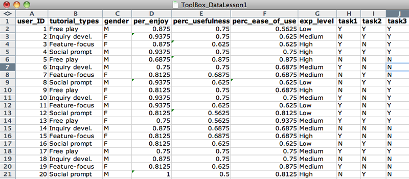

This short lesson is intended for graduate and advanced undergraduate students undertaking original research projects. After completing the 30-minute lesson, you will be able to to:
Format raw research data in an Excel spreadsheet for efficient analysis
Run basic descriptive statistics in Excel
Prepare the document for statistical analysis in the software package PASW\
Format data for analysis
Make sure the computer you are working on has Microsoft Excel installed. Open the document ToolBox_DataLesson.xls [[[NOTE: NEED LINK TO DOWNLOAD TUTORIAL EXCEL FILE]]] in Excel and follow along with the lesson, taking action as instructed.
In the Raw_Dataset spreadsheet, the name of each variable has been entered in the first row of each column.
Each variable name must be different from other variable names.
The first variable (in column A) is a unique identifier.
Variable names must start with a letter (not numbers or special characters), so change 4tutorial_types to tutorial_types.
Name variables so that they are intuitive to you. Therefore, change use and useful to perc_ease_of_use and perc_usefulness, respectively.
Your spreadsheet should look like Figure 1, and it should now be readily apparent that Column F refers to Perceived Usefulness and Column G refers to Perceived Ease of Use.
Tutorial type, gender, experience, and task categorical values have been formatted as dichotomous variables.
Data values, or rows, have been input for each subject in the experiment.
Decide on input conventions and stick to them. In gender, change the "female" value to "F".
Separate data into component values whenever possible by adding new columns. For example, tasks_completed values (Y/Y/N) can be broken up into three components. So, add columns task1, task2, and task3, and reformat values appropriately.
Double-check to ensure no data entry errors have been made, then delete the old tasks_completed column.
Your Raw_Dataset spreadsheet should now look like Figure 2.

Values for each variable are entered in a consistent format.
Copy the Raw_Dataset values into the Sheet2 tab. Rename this sheet Formatted_Data.
Rename columns according to each possible categorical value. Copy and paste the values from the original column.
Replace dichotomous data values with "0" or "1" (0=no, 1=yes) using the replace function: Edit > Replace.
Your Formatted_Data spreadsheet should now look like Figure 3.
In the Formatted_Data sheet, add new columns with Insert > Columns for each distinct value in categorical data columns (tutorial_types, gender, exp_level, task1, task2, and task3). You do not have to add a new column for task1, task2, and task3 because their values are already dichotomous.
Tutorial type, gender, experience, and task categorical values have been formatted as dichotomous variables.

.png)